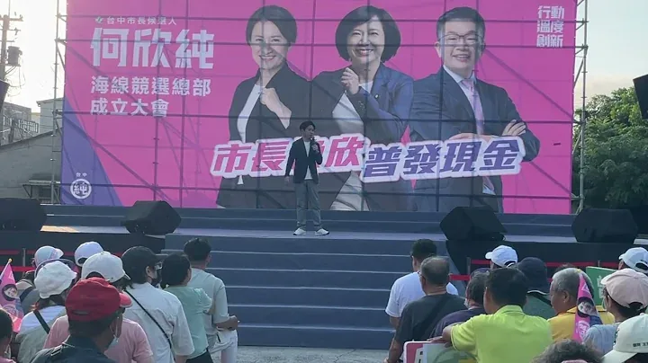
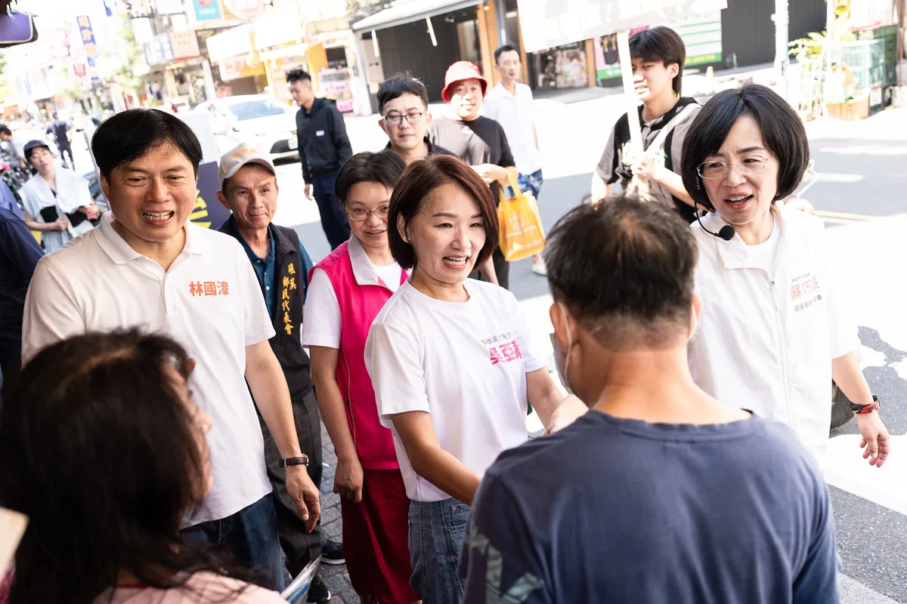
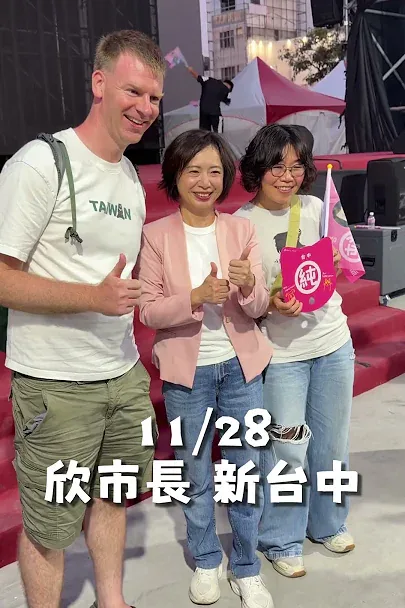

MAYOR2026.OBSERVE.TW
整理臺北、新北、桃園、臺中、臺南、高雄市長候選人的官方公開發文，跨平台合併時間軸與議題比例。
Six Municipalities
最後更新 2026-09-22 17:06
Latest

@prof.kochihen:世界無車日，是重新思考城市交通的關鍵時機。 除了持續提升低碳運輸的品質與使用率，更要從市民每天的生活需求出發，讓步行、騎自行車、大眾運輸與汽機車，都能有更完善的交通環境，打造安全、便利、舒適的高雄。 五大政策，打造高雄友善交通新生活。


@pumashen:黨派可以不同，對台北的期待，值得當面聊聊。 ⠀ 謝謝每一位願意說出想法的市民。 ⠀ 我們下一場見！

@schuanglawyer:有人認得這個背影嗎？


各行各業一起努力，把高雄照顧得更好！ 經貿文教各界夥伴齊聚一堂，從幼教、兒照、補教、家長團體，到美容業與各界社團，大家雖來自不同領域，卻有共同心願，就是讓高雄的下一代過得更好，也讓產業有更好的發展。 謝謝劉秀鳳總會長號召成立後援總會，也謝謝各區會長帶領各行各業夥伴響應。各位都是第一線工作者，最了解家長的需要，也最清楚產業面對的問題。 孩子的成長不能等，產業發展也不能停。 未來，我會朝「一國小學區一公托」努力，增加公共托育據點、改善托育人員待遇；生育補助加碼到每胎5萬元，成立高雄育兒基金，擴大產後到宅照顧，推動每年60小時延托，讓雙薪家庭多一份支持。 對美容業的夥伴，我會透過「女力新未來」支持女性重返職場、友善創業與職訓；面對產業轉型，則以「傳產支撐科技、科技加值傳產」為主軸，讓不同產業都能找到新的發展機會。 選戰倒數67天，有越來越多不同領域的夥伴加入高雄隊，匯聚每一分力量，為高雄下一個十年努力。11月28日，市長當選、議員過半，一起為高雄拚未來！ 高雄小金剛許智傑 邱俊憲 高雄市議員 何權峰 高雄市議員 陳慧文 高雄市議員 湯詠瑜 詠瑜新選擇 高雄市議員郭建盟 黃文志 高雄市議員 江瑞鴻 高雄市議員 林智鴻 高雄市議員 張漢忠 高雄市議員 #鳳山絕配鄧巧配 洪村銘 大寮林園要改變 黃敬雅 Huang Ching-Ya 吳昱鋒-科技先鋒 理想青年 張以理 蘇致榮 鳳山阿榮 服務團隊


@a_chun1973:大家看到我的跑跑純公車廣告了嗎？ 我要衝刺台中市長，為市民謀福利，公車乘載著我對台中的願景與祝福， 何欣純要做好3件事：交通串聯、年輕城市、福利升級！ 新台中，就交給何欣純！

@su.chiaohui:民主路40年，我們一棒接一棒，讓新世代扛起新時代！ 民主進步黨即將邁進40週年，從黨外運動、民主轉型到今天，我們能擁有亞洲第一的民主、用選票決定未來，都是無數個民主前輩用青春與勇氣一步一步走出來的路。 現在，輪到我們新世代扛起責任，繼續向前行，為下一代開闢一條更寬廣、更自由、充滿機會的道路！
@pumashen:▓


Before leaving for my Japan trip, my assistant gave me a mission...

日本行出發前，助理交給我一個任務⋯

【919鳳山大造勢｜蔣萬安演講精華】 #蔣萬安 @wanan.chiang 市長：「柯志恩持續深耕高雄，兌現承諾、說到做到。」 「她能讓高雄的進步走出舞台、走入巷弄；走出市區、走入38個行政區，讓高雄更加耀眼！」 #柯志恩 #蔣萬安 #李四川 #王金平 #大風起 #夢想海港 #世界雄心

@schuanglawyer:小英總統來了！今天非常榮幸邀請蔡英文總統 @tsai_ingwen 來到大溪老茶廠🫖 大溪擁有深厚文化底蘊跟觀光潛力，從大溪老街、大溪木藝生態博物館、李騰芳古宅、武德殿到六二四故事館，都是值得一去再去，我也帶著孩子來過的私房景點。 小英總統分享，上次到大溪老茶廠是七年前，他特別勉勵我：「我總統都選上了，你也要選上市長。」聽完真的充滿動力，我一定會跟緊學姐腳步全力衝刺，讓心桃園動起來💖 今天也特別跟小英學姐介紹我的募款小物「企鵝阿爸」🐧學姐笑說眼睛真的有像，大家覺得呢？


@chen_tingfei:未來台南的交通，要讓不同載具順利串連！🚗🚆🚲 我的「交通七彩行」，就是要把台南的道路、軌道與不同運具真正結合串連，讓溪南、溪北、沿海、市區都能更方便地連結。 從四橫三縱、捷運路網，到觀光輕軌、糖鐵五分車、自行車道，一張完整的交通網，才能讓生活、工作、觀光都走得更順。 同時，今天我也跟台南隊的夥伴們一起宣布，「9款妃妃泰迪熊」競選小物正式開賣，每隻妃妃泰迪熊都代表著不同角色，也代表著未來我對台南不同面向的期待與想像！ 每隻妃熊競選小物1680元，你最想帶哪隻妃熊回家呢，快來我的競選總部看看吧！🐻💕

#世界無車日，是重新思考城市交通的關鍵時機。 除了持續提升低碳運輸的品質與使用率，更要從市民每天的生活需求出發，讓步行、騎自行車、大眾運輸與汽機車，都能有更完善的交通環境，打造安全、便利、舒適的高雄。 #五大政策，打造高雄友善交通新生活。 一、落實人本交通，把好走的路還給行人 下了車，大家都是行人。 目標在2030年，將都市計畫區內12米道路的人行道覆蓋率提升至65%。讓城市裡的長輩、孩子，以及推著嬰兒車的父母，都能安心行走。 二、推動安心通學，守護每一個孩子的上學路 推動「安心通學圈」，以校園周邊為核心，全面改善學童通學路線，並逐步將範圍延伸到社區，打造15分鐘步行生活圈，讓孩子安全上學，也讓家長更加放心。 三、打造友善步行環境，讓城市更舒適 1. 推動「八年百萬植樹計畫」，全面檢視全市樹種，以原生樹種為核心，增加具韌性的行道樹，讓更多道路擁有綠蔭，也降低颱風造成樹木倒塌的風險。 2. 打造「城市風廊」，透過都市規劃將基地通風率納入都市更新獎勵，讓都市水系與綠蔭相互串聯，形成自然通風廊道，降低熱島效應。 3. 推動「連續型遮蔭步道」，善用騎樓、建築物內縮、穿堂、智慧型遮陽傘及連續遮廊等方式增加行人遮蔭，參考新加坡、韓國等城市經驗，讓市民擁有更舒適的步行環境。同時善用透水鋪面、路樹養護等方式更新人行道，減少積水並降低交通噪音。 四、大眾運輸使用更安心，提升候車與轉乘品質 改善公車候車區與照明系統，逐步建置公車等候區緊急服務鈴，並與轄區派出所連線，提升候車環境的安全與便利，讓市民搭乘大眾運輸更加安心。 五、高雄「雄好騎」，打造更完整的自行車生活圈 1. 推動YouBike前30分鐘免費，鼓勵短程通勤、觀光騎乘與低碳代步。 2. 推動「銀髮樂騎計畫」，開放敬老卡扣點使用YouBike與電輔車，建立「敬老卡加傷害險」一站式開通機制，降低長輩使用門檻。 3. 升級自行車道與站點，串接捷運、輕軌沿線，以及商圈、住宅區與觀光景點，增設保護型自行車道，並將YouBike站點擴增至1,800站。 4. 導入AI與大數據改善車輛調度、維修效率與站點配置，將低使用率站點移往需求熱區，補足公車轉乘最後一哩路。 5. 推動自行車上輕軌，先於離峰時段試辦一般自行車上輕軌，強化自行車與大眾運輸的轉乘便利性。 一座好的城市，交通不只是通行，更與每一個人的日常生活息息相關。 從步行、騎車到搭乘大眾運輸，我們要讓每一種交通方式都更加安全、便利、舒適，也讓不同年齡、不同需求的市民，都能享有更好的城市生活。 世界無車日，讓我們一起打造更友善、更宜居、更有活力的高雄。
@a_chun1973:提醒一下台中純派們📣 今天是何欣純第一波募款小物預約下訂的最後一天！ 心動不如馬上行動，趕快把握時間，點擊連結預約下訂👇 https://donate.ecpay.com.tw/home/2026achun/ 📌募款小物內容 👕 A｜何欣純 TEAM TAICHUNG 球衣 捐款滿 3,000元 ➜ 限量台中隊球衣 1 件 🏃 B｜跑跑純應援巾 捐款滿 888元 ➜ 應援巾 1 條 🛍️ C｜台中純網袋 捐款滿 321元 ➜ 台中純網袋 1 個 ⭐ D｜何欣純募款感恩大全套｜限量200組！ 捐款滿 5,000元 ➜ ABC三款一次收藏，再加碼【官方「純」LOGO棒球帽】🧢 📌小提醒：球衣請於捐款備註欄註明 M、L、XL、2L、3L；小物將自 10/15起陸續到貨，並寄送至捐款收據地址。

【何欣純海線競總成立】張惇涵力挺何欣純 台中不能原地踏步
@schuanglawyer:黃世杰已經準備好了，張善政呢？我不怕直接辯論市政，但張善政究竟是對這四年的表現沒信心，還是害怕被235萬市民檢視？ 昨天，張善政在議會備詢時，說他不會跟我進行辯論。 我在準備登記書件時，毫不猶豫勾選參加政見發表、且願意接受辯論，希望跟張善政能夠有一場公開交流市政的機會。 因為桃園人實在太悶了，這四年找不到市長、看不到建設、不清楚桃園方向。 這段時日以來，無論我對市政提出任何疑問，張善政幾乎都不正面回應，不然就是請局處首長代打。 如果連民主選舉前的市政辯論，張善政都不願意現身，市民要如何檢視我們對市政問題的理解、政策主張，如何知道我們想把桃園帶到哪裡去？ 桃園市民要看的不是準備好的講稿，而是面對問題時，能不能提出具體答案。 這種「只想單向宣布、不願接受市民提問」的態度，也讓人聯想到近期航空城PCB專區引發的地方爭議。重大產業政策牽涉居民生活與地方發展，本來就應該充分說明、充分溝通。市長選舉也一樣，不能只挑準備好的內容，更應該面對問題、直球回答，讓城市治理方案接受公開檢驗。 所以我要問，張善政究竟是對這四年表現沒信心，還是面對市政問題沒有準備好答案，面對235萬市民會害怕？

謝謝各位無名英雄用心守護家園，辛苦了！💪
@pumashen:日本行出發前，助理交給我一個任務⋯

還記得昨晚在中壢夜市的感動嗎？ 倒數68天，我們要把這樣的團結跟熱情延續下去！ 洋流來襲、杰伴同行，11/28台北桃園一起贏💖 @pumashen


@hammer__lee:今晚，我與侯友宜市長、蔣萬安市長，一起走上川端橋。 這座橋跨越新店溪，連接雙北的風景。 雙北連線，我們一起拚！

We may belong to different parties, but our hopes for Taipei are worth discussing in person. Than...

@su.chiaohui:吳亞蓁加油！林詩穎加油！@lin.kuo.chang 林國漳加油！ 今天特別到宜蘭除了幫我的律師大學長 #林國漳 縣長候選人加油，也想特別和大家推薦礁溪鄉鄉長候選人 #吳亞蓁，和宜蘭縣議員 #林詩穎。 其實我跟兩人都認識很久了，亞蓁以前在立法院就是處理法案、政策等大小事的國會辦公室主任，經歷三十年的打拚和成長，現在要將她的所學回饋家鄉，讓更多人認識礁溪、看見礁溪的故事。 四年前我便曾到宜蘭頭城為詩穎加油，四年來我們在各自的崗位上為地方努力，今天我再次到頭城，看見詩穎這幾年在地方的服務真的有成績，讓頭城持續進步，也懇請鄉親好朋友繼續支持年輕、創新、有經驗的詩穎。 也要拜託所有宜蘭縣的好朋友支持溫暖、正派的林國漳律師，也請宜蘭市的好朋友支持未來宜蘭市的最佳代言人 @hanying218 韓瑩市長候選人。 新北贏！宜蘭贏！

@zenolai:各行各業一起努力，把高雄照顧得更好！ 經貿文教各界夥伴齊聚一堂，從幼教、兒照、補教、家長團體，到美容業與各界社團，大家雖來自不同領域，卻有共同心願，就是讓高雄的下一代過得更好，也讓產業有更好的發展。 謝謝劉秀鳳總會長號召成立後援總會，也謝謝各區會長帶領各行各業夥伴響應。各位都是第一線工作者，最了解家長的需要，也最清楚產業面對的問題。

大家看到我的跑跑純公車廣告了嗎？我要衝刺台中市長，為市民謀福利，公車乘載著我對台中的願景與祝福，何欣純要做好3件事：交通串聯、年輕城市、福利升級！新台中，就交給何欣純！

台中隊可愛的一面都在這！何欣純競選總部成立大會花絮💚
DPP 40th Anniversary Concert Speech: "40 Years of Legacy, A Democratic Resonance" – Let the New G...

臺中是一座多元的城市，不同語言、文化與生活經驗在這裡交會，也帶來更多與世界連結的可能。 對此，我提出四項 #臺中新家鄉 政策： ✨成立「國際合作發展委員會」 整合跨國經貿合作與生活服務，建立完整的一站式窗口。 ✨啟動「新住民二代國際領航計畫」 透過培力及實務活動，促成臺中與新住民母國間更多雙向交流與合作。 ✨新住民微型創業貸款利息補貼 在既有創業培力課程基礎上，進一步提供貸款利息補貼。 ✨升級母語、法律與心理諮詢服務 強化現有新住民一站式服務，導入多語系專業律師及心理諮商資源。 從國際交流、二代培力，到創業與生活支持，讓不同文化在臺中彼此交流，也讓城市與世界建立更多連結。 #臺中啟程 #打造旗艦城 #臺中升級 #幸福加給 #新住民

@schuanglawyer:還記得昨晚在中壢夜市的感動嗎？ 倒數68天，我們要把這樣的團結跟熱情延續下去！ 洋流來襲、杰伴同行，11/28台北桃園一起贏💖 @pumashen


【9/19 Fengshan Mega Rally | Highlights of Chiang Wan-an's Speech】

今晚，我與 @hou.yuih 侯友宜市長、 @wanan.chiang 蔣萬安市長，一起走上川端橋。 這座橋跨越新店溪，連接雙北的風景。 雙北連線，我們一起拚！